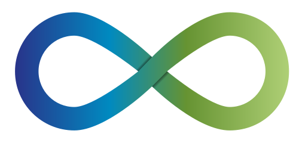

ContinuITy: Automated Performance Testing in Continuous Software Engineering
Follow us on GitHub
Press Releases
- ContinuITY: New Research Project (SPEC RG Newsletter, vol. 2, issue 3, 2018)
Dušan Okanović, André van Hoorn, Henning Schulz, Christoph Heger
Talks
- Automated Load Testing in Continuous Software Engineering
André van Hoorn
ScrumScale meeting, Oslo, Norway
- Continuous Performance Testing for Microservices
Vincenzo Ferme
HPI Future SOC Lab Day - Spring 2018, Potsdam, Germany
- ContinuITy: Automated Performance Testing in Continuous Software Engineering (talk abstract)
Henning Schulz, André van Hoorn, Christoph Heger and Alexander Wert
8th Symposium on Software Performance (SSP '17), Karlsruhe, Germany
Research Publications
- Towards Automating Representative Load Testing in Continuous Software Engineering (full paper)
Henning Schulz, Tobias Angerstein and André van Hoorn
Companion of the International Conference on Performance Engineering (ICPE) 2018, Berlin, Germany
- Exploiting load testing and profiling for Performance Antipattern Detection (full paper)
Catia Trubiani, Alexander Bran, André van Hoorn, Alberto Avritzer and Holger Knoche
Information & Software Technology, vol. 95 (2018)
Student Theses
Running Theses
- Declarative User Experience Regression Analysis in Continuous Performance Engineering
Manuel Palenga
Master’s Thesis, University of Stuttgart, 2018
- Context-Aware Load Testing in Continuous Software Engineering
Alper Hidiroglu
Master’s Thesis, University of Stuttgart, 2018
- Modularization of Representative Load Tests for Microservice Applications
Tobias Angerstein
Master’s Thesis, University of Stuttgart, 2018